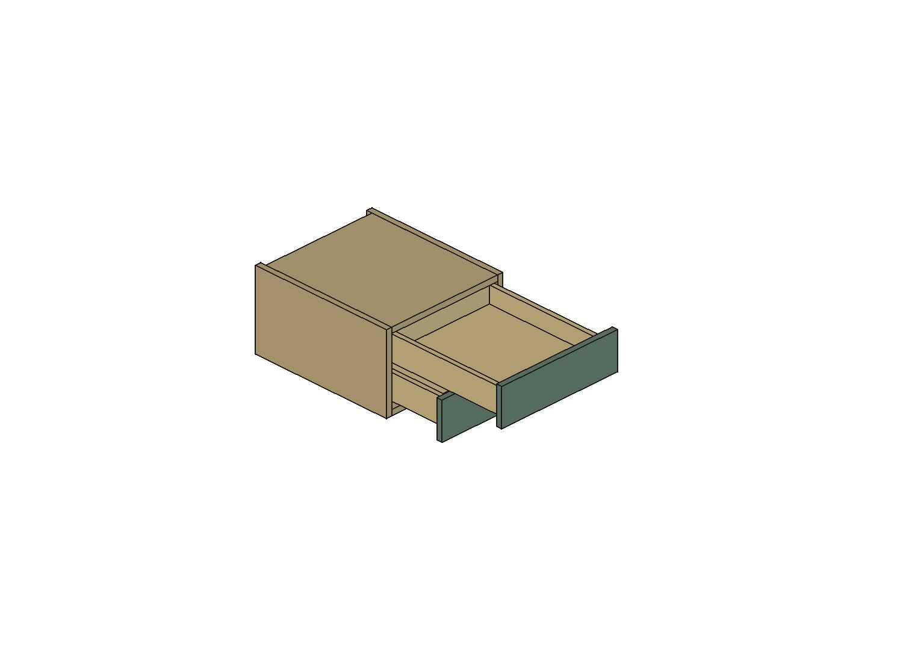
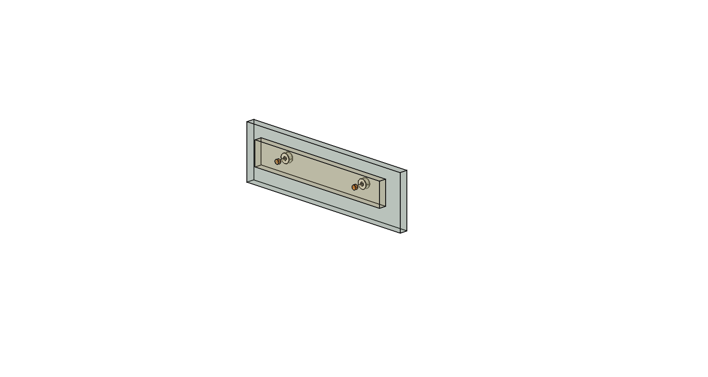

Gavetas do escritório · R03
Fixação independente das frentes e conferência do armazenamento. Estudo separado da R42, desenvolvido a partir da montagem vertical R02.
Montagem ainda não liberada. R42 preservada.
A geometria proposta preserva o armazenamento e passou na conferência descrita abaixo. Faltam o desenho dimensional do engate FGVTN, a especificação final do parafuso dos reguladores e a validação das tolerâncias e resistência. Não usar este estudo como gabarito de fabricação.
Abrir modelo FreeCAD R03Resultados dos cálculosScript reproduzívelHistórico R02
O que foi detalhado
Quatro reguladores de frente Blum 295.1000 métricos, dois por gaveta, com geometria STEP oficial da biblioteca local. Eles fixam a frente decorativa à dianteira de madeira; não substituem os engates FGVTN que prendem a caixa à corrediça.
Foram modelados os furos cegos nas frentes, os furos propostos de passagem na dianteira e uma reserva conservadora para cabeça e arruela. A aparência externa das frentes e a junta nominal de2 mm foram preservadas. O corpo STEP é estático: sua porca não foi transformada em mecanismo articulado nem seu curso interno simulado.

Madeira e fixação em estudo. Guias e engates FGVTN reais ainda não estão representados.
Armazenamento depois da fixação
A R02 oferecia profundidade interna de369 mm. Reservamos5 mm contínuos na frente para cabeças e arruelas, deixando 364 mm livres, ainda5 mm acima dos359 mm da R42. Não contamos o espaço entre as cabeças como armazenamento para compensar a reserva.
| Gaveta | R42 · largura × profundidade × altura | R03 · após reserva | Prisma útil |
|---|
| Inferior | 322 × 359 × 60,4 mm | 323 × 364 × 60,4 mm | 6,982 → 7,101 L |
| Superior | 322 × 359 × 54 mm | 323 × 364 × 54 mm | 6,242 → 6,349 L |
Ganho geométrico de1,71% em cada prisma, sem reduzir as alturas de referência.
São prismas comparativos de espaço, não capacidade de carga certificada. A altura de60,4 mm foi mantida como requisito, apesar de exceder a altura lateral acima do fundo. A passagem desse conteúdo foi incluída na análise. O curso FGVTN documentado continua375 ±3 mm, contra400 mm da referência anterior: preservar volume não significa preservar o mesmo acesso ao fundo.
Fixação e compensação de altura
O catálogo Blum indica furoØ20, profundidade10,5 mm e regulagem±2 mm. Em uma frente de18 mm, a furação cega deixa7,5 mm nominais de material até a face externa. Os reguladores ficam200 mm entre si; o primeiro a99 mm da borda esquerda da frente.
Para compensar a hipótese de regulagem vertical da caixa de0 a3 mm, o centro do regulador fica1,5 mm acima do eixo do parafuso na posição baixa. O deslocamento necessário da porca é−1,5 a+1,5 mm: cabe na faixa documentada, com0,5 mm de reserva. Essa reserva também precisa acomodar erros de furação e alinhamento.
| Item | Proposta / condição |
|---|
| Furos cegos na frente | Ø20 × 10,5 mm; coordenadas no JSON. Centros globais Z564 inferior / Z672 superior. |
| Passagem na dianteira16 mm | Ø5 proposto; confirmar com o parafuso especificado. Eixo Z562,5 /670,5 na posição baixa. |
| Cabeça e arruela | ReservaØ10 × 5 mm, representada em laranja; não é um produto comprado ou especificado. |
| Parafuso / porca | Rosca, comprimento, engajamento e orientação axial ainda não liberados. Não inferir pela versão imperial295.1000.21. |
| STEP e furo nominal | STEP tem diâmetro externo máximo20,8 mm. Interferência de inserção registrada separadamente; não aumentar o furo oficialØ20 para eliminar o contato do CAD. |

Transparência para inspeção. Corpos claros são os STEP; laranja são limites reservados para fixação. A orientação axial do STEP é provisória; parafuso completo e movimento interno da porca não estão modelados.
Conferência realizada e seus limites
- 1.568 verificações programadas, incluindo comparação com os demais sólidos finitos da R42. Nenhuma colisão no escopo testado e nenhuma forma inválida.
- Envelopes conservadores individuais varridos continuamente no percurso0–378 mm; caixas e cabeças abrangem subida0–3 mm, enquanto frentes e corpos dos reguladores permanecem alinhados verticalmente.
- Gavetas em posições independentes, colisões com carcaça, conteúdo e outros componentes do apartamento. Conteúdo contra peças da própria gaveta verificado nas alturas0/1,5/3 mm; peças acompanham o mesmo deslocamento de abertura.
- STEP oficial preservado sem escala, quatro cópias válidas. Frente mantém a camada externa após os furos cegos. Frentes e dianteiras continuam sólidos únicos.
- Folgas nominais mínimas do conteúdo:1,6 mm sob a frente superior e1 mm sob o topo. Junta entre frentes:2 mm.
- Não inclui articulação interna do regulador, rosca/engajamento do parafuso, guias e engates FGVTN ausentes, tolerâncias reais, deformação por carga ou resistência das ligações.
Os contatos de prensagem regulador–madeira foram quantificados à parte; a lista sem colisões não significa ausência dessas interferências intencionais. A posição das frentes é uma condição de montagem a ser garantida pelas fixações, não uma consequência comprovada de uma simulação mecânica.
Modelo salvo e reaberto: consultar registro de reabertura e integridade. A carcaça permanece400 × 470 × 248 mm, com as alterações de R02. Nenhuma dessas alterações foi incorporada à R42.
O que impede a incorporação
| Pendência | Evidência necessária para fechar |
|---|
| Engate convencional FGVTN400 | Envelope cotado, código/revisão, gabarito dos parafusos, acesso de destravamento, regulagem e perfil inferior. PDFs oficiais consultados não fornecem o conjunto completo. |
| Recortes e furos traseiros | Datums e tolerâncias do kit exato54FGOC12400TSX0; a interpretação das cotas7/11/33 mm precisa virar gabarito confirmado. |
| Fixação da frente | Parafuso compatível com295.1000 e dianteira16 mm, orientação de inserção, engajamento e retenção suficientes; confirmar necessidade de fixações complementares. |
| Tolerâncias e resistência | Orçamento dimensional para folgas de1/1,6 mm, fixações da caixa e fundo, prova de montagem e movimento com carga. |
O gatilho3D opcional não foi adotado: a folha encontrada também não dimensiona o envelope completo e a página atual menciona UniHide. Não pressupor intercambialidade entre revisões.
Consultas técnicas preparadas, não enviadas: FGVTN — engates e montagem · Blum — fixação das frentes.
Fontes e rastreabilidade
SHA256 da R42 preservada:
b30ae9ab9c82620ecdab26b2cfae589037954356d515b483b5b6849f76e4bc26